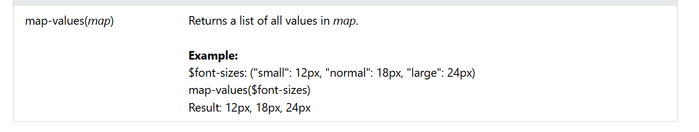
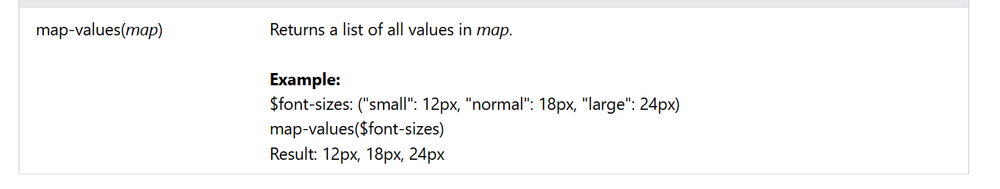

In Sass, the map data type represents one or more key/value pairs.
Tip: It is also possible to use the List functions from the previous page, with maps. Then the map will be treated as a list with two elements.
Sass maps are immutable (they cannot change). So, the map functions that return a map, will return a new map, and not change the original map.
The following table lists all map functions in Sass:
 
